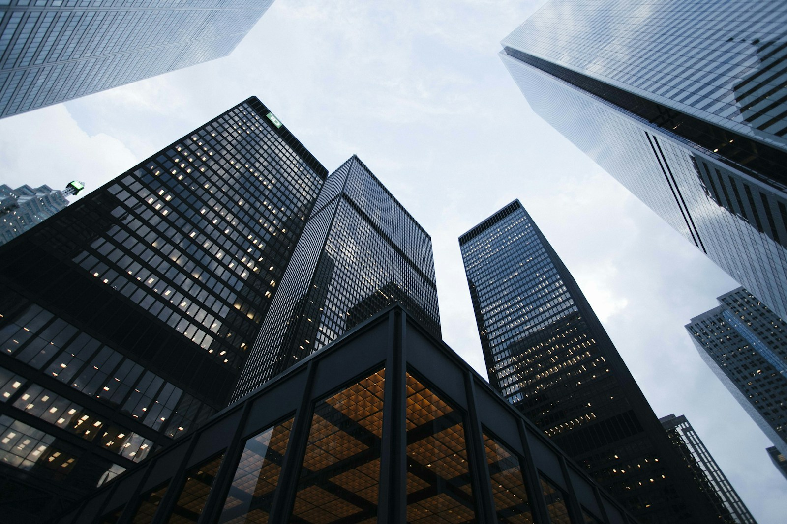

Constructoras e inmobiliarias
Ejecución de partidas de acabados y obra blanca después de la obra negra, de acuerdo con las especificaciones de cada proyecto.
Acabados y remodelaciones para constructoras, inmobiliarias y hogares. De la obra negra al detalle final.
FLORES | Ingeniería y Construcción brinda servicios de acabados, remodelación y construcción para el sector privado. Atendemos a constructoras e inmobiliarias que necesitan ejecutar obra blanca, así como a propietarios que buscan renovar o ampliar sus espacios.
Trabajamos por partidas o con un alcance integral, bajo las modalidades de solo mano de obra y a todo costo.
Desde los acabados de un edificio hasta la remodelación integral de una vivienda.

Ejecutamos partidas de obra blanca para constructoras e inmobiliarias, según los planos, especificaciones y cronograma acordados.
Explorar servicio →
Remodelamos departamentos, casas, oficinas y locales, integrando las partidas necesarias en un alcance de trabajo definido.
Explorar servicio →
Desarrollamos obras nuevas y ampliaciones para clientes privados, partiendo de una revisión técnica y del alcance definido para cada intervención.
Explorar servicio →
Definimos la distribución, los materiales y la imagen de tu proyecto mediante diseño de interiores, planos y vistas 3D.
Explorar servicio →Imágenes referenciales de las áreas de servicio.
Ejecución de partidas de acabados y obra blanca después de la obra negra, de acuerdo con las especificaciones de cada proyecto.
Remodelaciones integrales, ampliaciones y construcción para casas, departamentos y otros espacios privados.
Coordinamos una visita gratuita para conocer el espacio, los planos y tus necesidades.
Acordamos partidas, materiales, presupuesto y cronograma antes de comenzar.
Desarrollamos el alcance contratado y coordinamos el avance contigo.
Revisamos los trabajos, realizamos la limpieza final y brindamos 1 año de garantía.
Agenda una visita de evaluación sin costo en Lima Metropolitana.